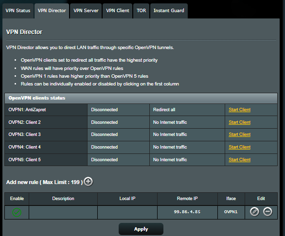

| Ник | Пост | Дата |
|---|---|---|
| PS1TD(Alexander Vorobyev) | Установил кастомною прошивку на свой роутер Asuswrt-Merlin с доп функцианолом с надеждой на то что получится настроить OpenVPN так чтобы работало как на десктопе(в впн идут только заблокированные сайты, всё остальное проходит мимо).  | 2023-01-17T23:47:44.327Z |
| nzkhammatov(Ainur Khammatov) |
Какие ещё варианты? | 2023-01-18T02:24:24.197Z |
| User69 | Да, за это бан от сервиса | 2023-01-18T14:31:06.210Z |
| PS1TD(Alexander Vorobyev) | Варианты: | 2023-01-18T16:06:01.333Z |
| PS1TD(Alexander Vorobyev) | Не совсем понимаю какой бан и от какого сервиса. | 2023-01-18T16:07:33.467Z |
| User69 | Бан от Антизапрета за проксирование всего трафика вместо заблокированного. | 2023-01-18T16:21:54.553Z |
| PS1TD(Alexander Vorobyev) | А да конечно, я и не планирую весь трафик перенаправлять, просто подразумиваю что он должен будет весь пройти через впн а сам впн решит какой трафик пропустить а какой нет | 2023-01-18T16:25:32.963Z |
| PS1TD(Alexander Vorobyev) | Добавив строку | 2023-01-18T16:36:57.119Z |
| PS1TD(Alexander Vorobyev) | Нашел гайд на 4pda благодаря которому все заработало | 2023-01-18T17:16:29.772Z |
{kind=link}
{kind=link}